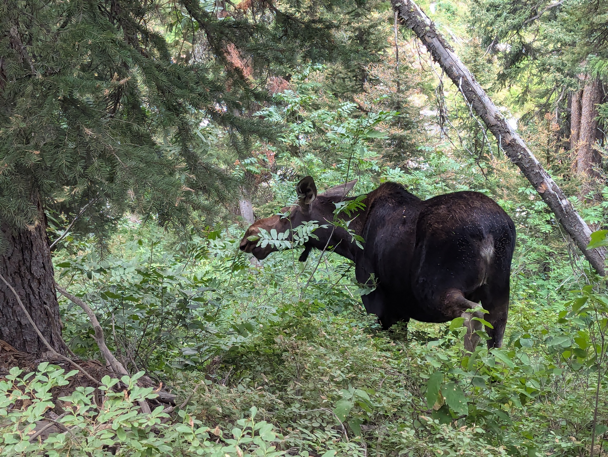
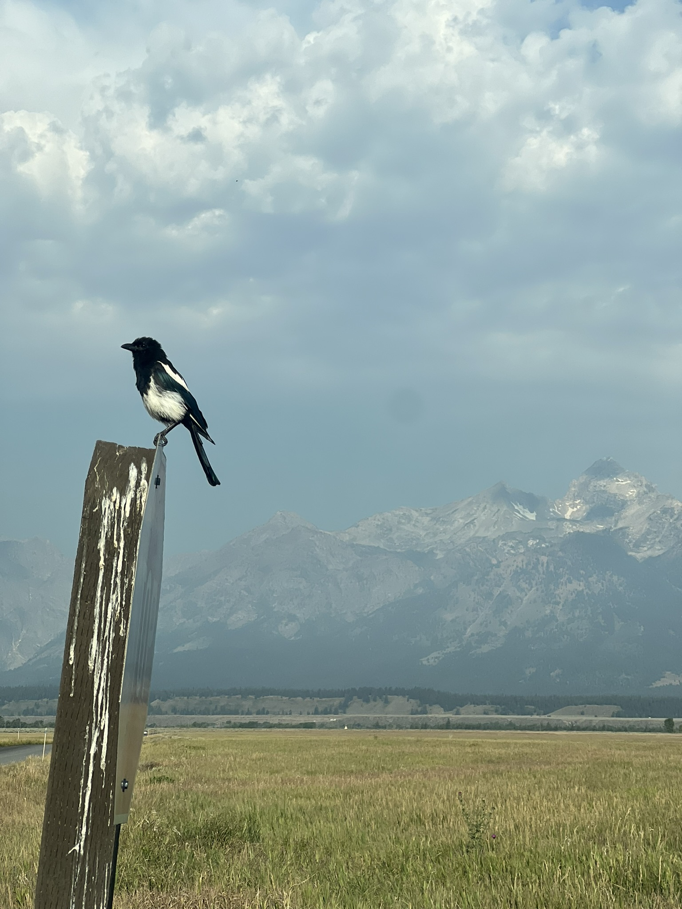
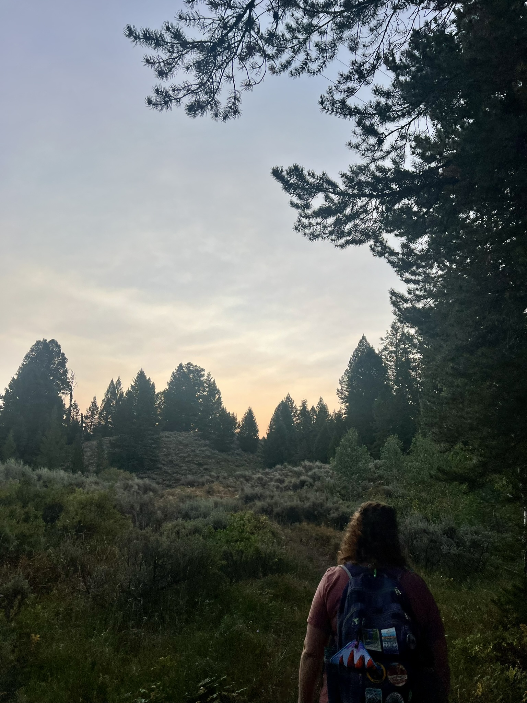
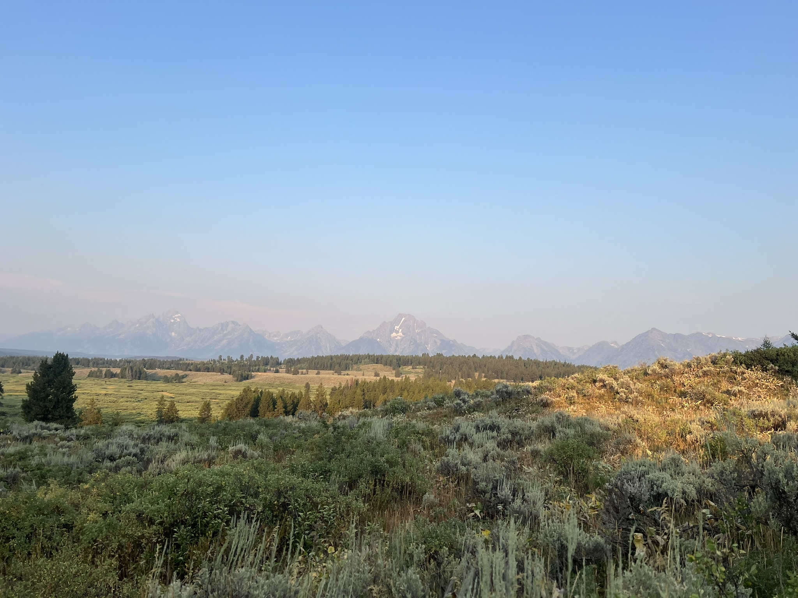
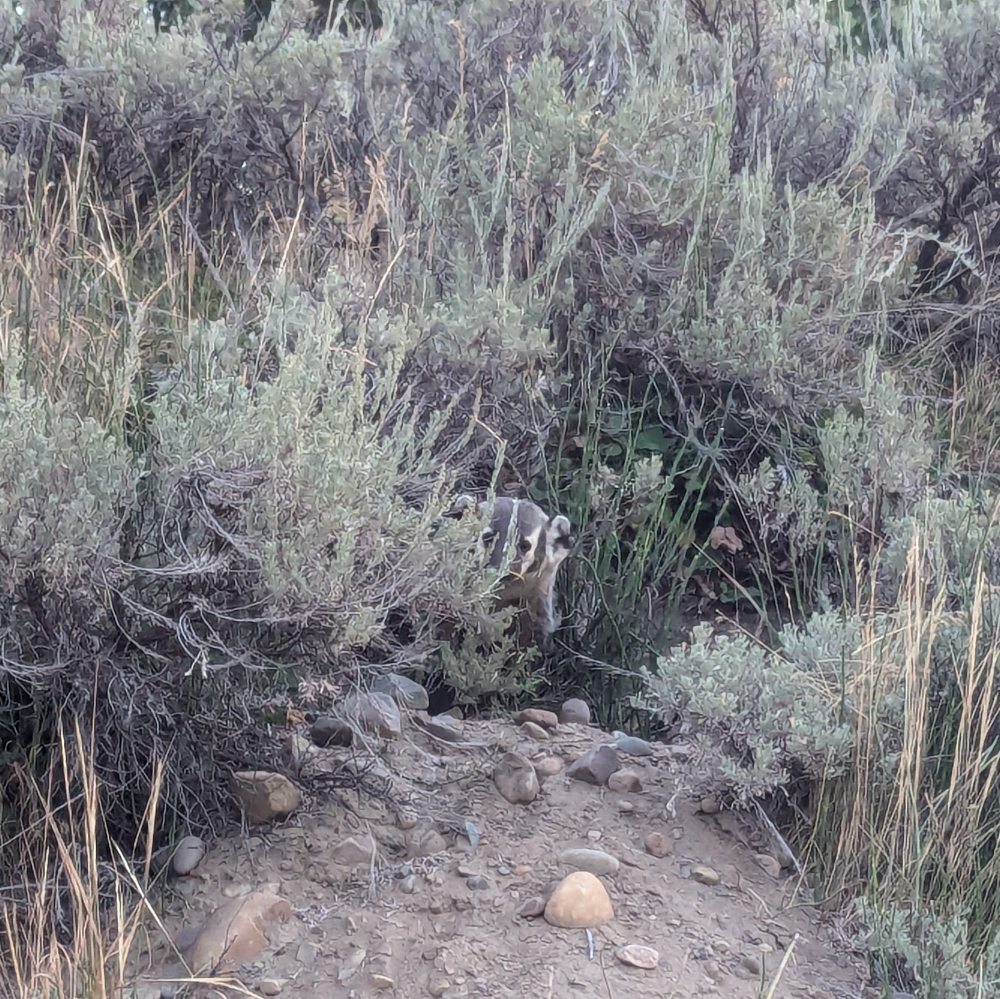
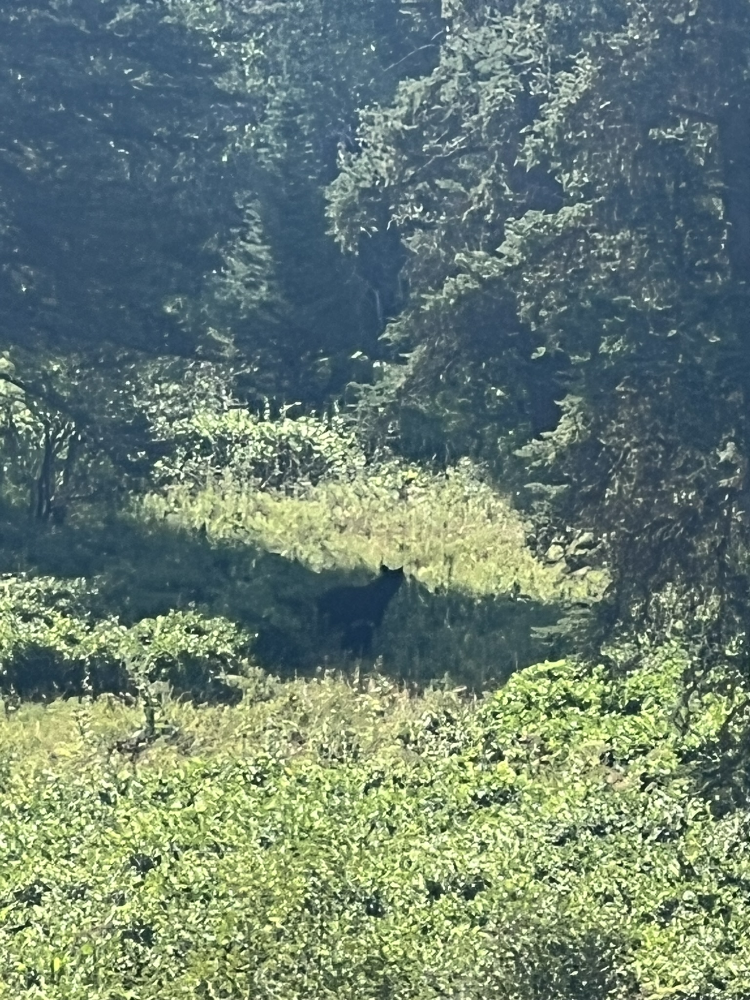
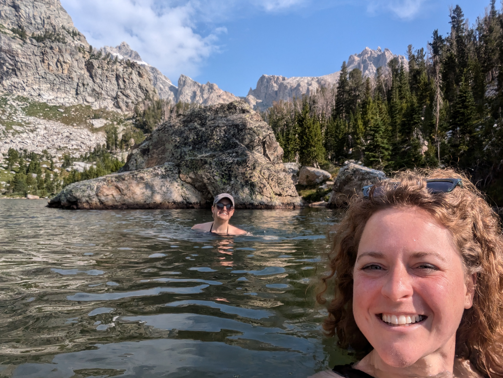
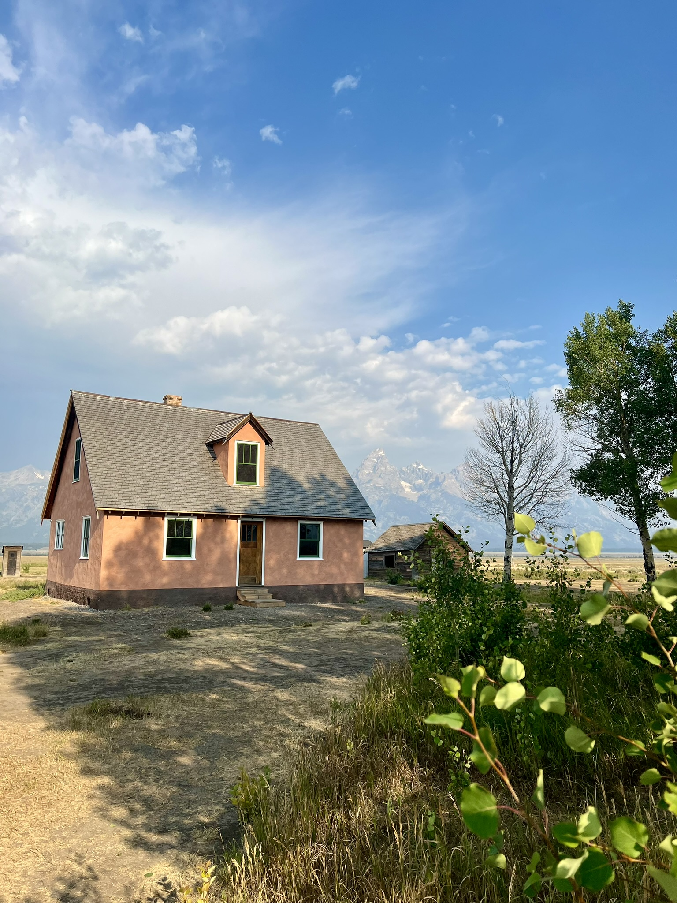
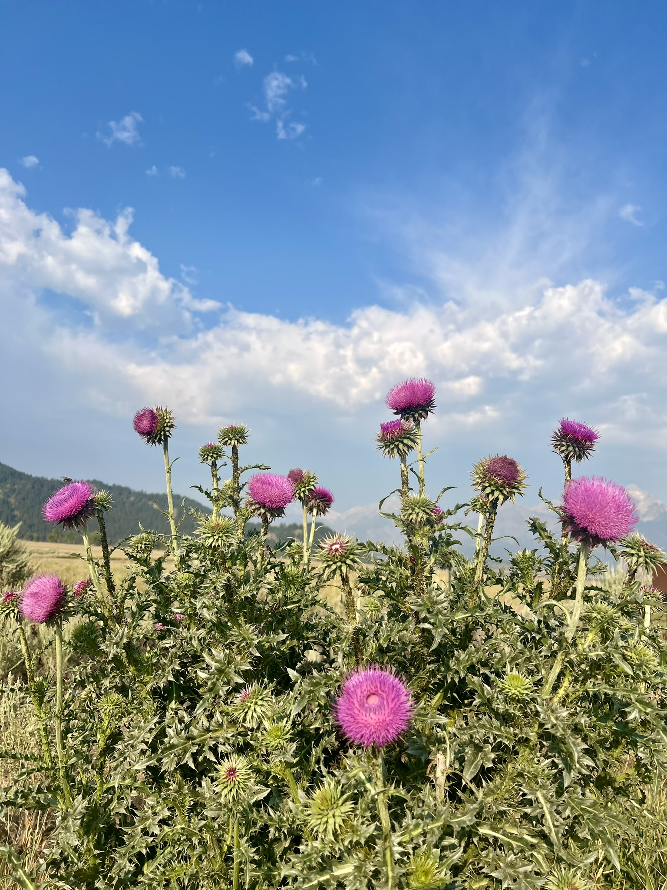

Hiking, camping, and exploring the great outdoors.
Grand Teton National Park
August 2024
Highlights:
We went during peak season, so we saw a TON of wildlife; 5 moose, a mama bear and 2 cubs, and a badger were our favorites!Sarah taught me how to cold plunge in the glacial lake at the summit of our hike! It was refreshing.We challenged ourselves with 3000 ft of elevation gain, which neither of us had done before. We were proud of ourselves.We used a hotel voucher to stay for free at a nice place in Jacksonhole. It was a bit rich for our blood, but we made friends with the front desk, and made sure to show up every night at 7:30 PM for free dessert :)

One of the many moose we saw on the trip! This one was a little too close for comfort.

Magpie enjoying the morning at "Mormon Row". The Teton mountain range can be seen in the background through a haze of wildfire smoke.

Sarah ahead of me on the trail. We purposefully put her in front because she is much more observant of wildlife than I am!

Landscape view of the Tetons from a hiking trail.

This Badger was hiding in the brush in the early morning. This little face is pretty cute now, but in the moment I realized I knew nothing about badgers. Do they bite?

This bear and her 2 cubs played in the shade while we watched from far away. It was Sarah's first bear sighting!

Sarah and I cold plunged in this beauiful glacial lake (very appropriately named "ampitheater lake" at the summit of our hike. Sarah cold plunges often, and believes the water was around 48*. It was incredible and refreshing.

Mormon Row is a historic area in GTNP with old homesteads and barns. This barn is one of the most photographed in the park.

Musk thistle growing wild in GTNP.